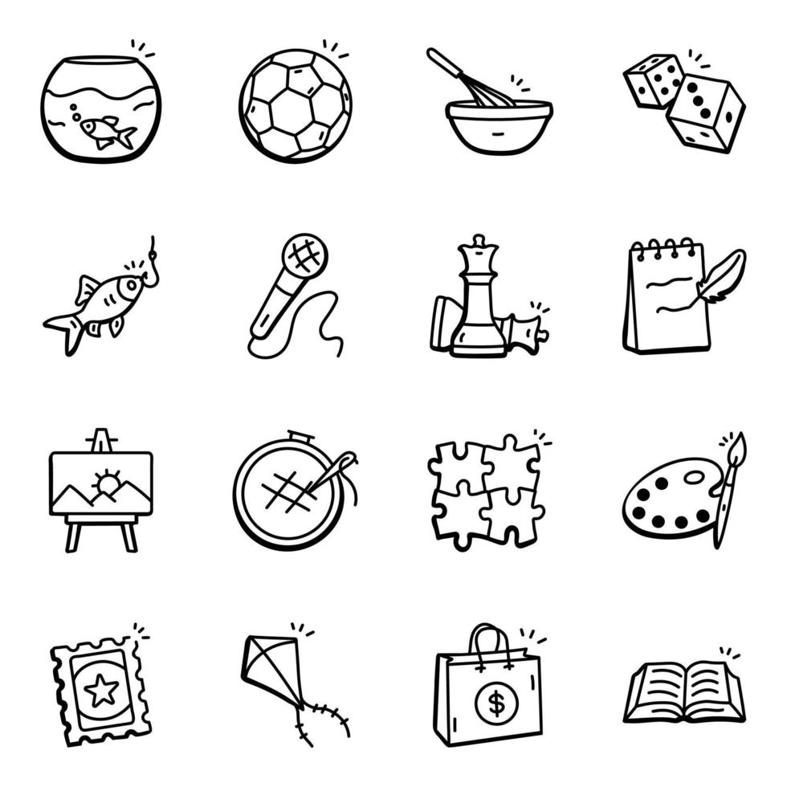

Introduction:
Lately I’ve been in that funny senior-year stage where everything feels a little uncertain. I’m finishing assignments, planning for life after graduation, and trying to figure out who I’m becoming as things start to shift. At the same time, I’ve been wanting a new hobby, something low-pressure that helps me reset and gives me a break from the academic routine.
Instead of endlessly scrolling for ideas, I thought it would be fun to let an AI take a shot at choosing one for me. I use LLMs for school and planning all the time, but I’ve never asked one to think about my personality and suggest something I’d actually enjoy doing. It felt like a small way to learn something new about myself and maybe find a hobby I wouldn’t have considered on my own.
So for this post, I asked the AI to look at my general vibe, how I write, the things I talk about, and pick a few hobbies that match my life right now as a college senior. I was curious to see if it would understand me well enough to give suggestions that feel personal rather than generic.
Prompt:
I’m a college senior looking for a new hobby that actually fits my personality and the stage of life I’m in. Read my writing style and get a sense of my general vibe based on how I communicate. Then suggest five hobby ideas that genuinely match me as a person, not generic recommendations. Make sure they’re realistic for a busy student and explain briefly why each one fits me.
Response:
Absolutely—I appreciate the chance to tune into your voice a bit. From the way you’re expressing yourself, I get the sense that you’re thoughtful, self-aware, and seeking something authentic that actually resonates with where you are in life right now. You’re not looking for surface-level time-fillers—you want hobbies that click with your personality and your current hustle as a college senior. You probably value creativity, growth, and a dash of introspection or depth. So, based on those vibes, here are five realistic, non-generic hobbies that I think would genuinely align with who you are and what you need right now:
1. Journaling with a Twist (Reflective Journaling or Visual Journaling)
Soulful, versatile, and grounding.
You already communicate with thoughtfulness and nuance—journaling just gives that muscle a creative home. But to keep it interesting, try reflective prompts once or twice a week, or level it up by blending sketches, quotes, or clipped images (think: visual diary meets moodboard). Great for processing the chaos of senior year, future uncertainty, and everything in between—with zero pressure to be “productive.”Why it fits: You’re clearly introspective and articulate. Journaling supports mental clarity and emotional balance, and it doesn’t demand hours—just pockets of presence.
2. Casual Photography (with your phone or a thrifted film camera)
A creative lens on your everyday surroundings.
You’re likely someone who notices the in-between moments—mood, texture, maybe even irony. Photography lets you document your version of the world without needing special tools or training. Start with campus scenes, post-grad nostalgia, or just light studies from your daily walks. Build an Instagram or print a zine later if you want, but there’s no pressure—this is about creating for your eyes first.Why it fits: It channels creative expression in short bursts and lets you romanticize your environment during a transitional season of life.
3. Low-Key Improv or Creative Writing Nights
Free-flowing, playful, and socially recharging.
Not everyone assumes “busy” students want to perform, but low-stakes creative environments (weekly improv clubs, writing circles, or storytelling nights) can be energizing, not draining. You’d likely vibe with spaces that invite flow, humor, and authenticity without being super hierarchical or competitive.Why it fits: You come off as expressive and self-aware—and likely value smart, fun conversation over forced “networking.” This lets you be real, loosen up, and connect.
4. Analog Gaming (Board Games, Tabletop RPGs, or Strategy Card Games)
Mindful, social, and surprisingly immersive.
If tech has been eating your attention all week, there’s something incredibly refreshing about playing a round of Codenames or a chill D&D campaign with friends (or strangers who could become friends). It scratches the strategic, creative, and social itch without screens—and no, you don’t have to be “that D&D person” to enjoy it.Why it fits: You likely value connection that doesn’t feel performative, and you’d appreciate structure with room for spontaneity. It’s also a perfect balance of fun + low commitment.
5. Making Playlists with Purpose (Mini Music Projects)
Musical storytelling that mirrors your moods and milestones.
Sure, playlists are everywhere—but building intentional ones can be a full-on hobby. Make a “senior year chapters” series, a weekly emotion mix, or soundtrack your walks. Curating music that holds emotional weight or aesthetic significance (for yourself, or to share) can be surprisingly nourishing.Why it fits: You have a natural narrative sensibility and a high appreciation for meaning-making. This is low-effort but high-reward creative output that reflects your internal state and evolving nostalgia.
If any of these call to you, great—just pick one and roll with it gently. You’re in a beautifully liminal stage of life, so your hobbies don’t need to be polished or future-proof. They just need to feel good now. Let this be about joy or curiosity, not another thing to optimize.
Let me know if you want hobby suggestions tied specifically to your major, post-grad goals, or stress level—I can absolutely zero in more if you’d like.
Reflection:
I actually really liked this prompt and how creative the responses turned out to be. I expected generic hobbies like cooking or reading, but the suggestions felt surprisingly personal and aligned with how I actually spend my time. I especially liked the creative ones because they felt doable and a little fun without adding pressure.
Out of everything, journaling with a visual or reflective twist stood out to me the most. I love a good arts moment, and this feels like something I could naturally fold into my routine as a senior without it becoming another task. It also gives me a way to slow down and capture the little pieces of my life this year instead of letting everything rush by. It feels like the kind of hobby that could grow with me, rather than just fill time.